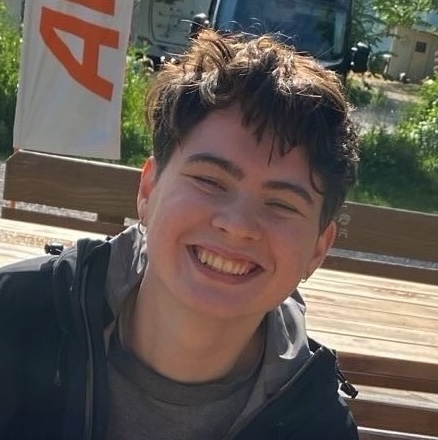

Hey, I'm Ali, a CS master's student at TUM. Currently, I'm passionate about ML interpretability research. I like the low-level mechanistic stuff — the questions that excite me most are how deep learning models represent knowledge and how it's all wired together inside.
I also like building things, and I'm working part-time at Helmit on ML model development for online child safety. Previously, I did research at xAI Lab hessian.AI (knowledge editing) and King's College London (AI safety). Before that, I studied CS at Marburg University and philosophy at Saint Petersburg State University.
In my free time I occasionally swim, read (mostly fiction or poetry), grow plants, and do puzzles. I also have a thing for medieval bestiary art, which explains this website.
If something here is wrong or interesting, feel free to tell me.